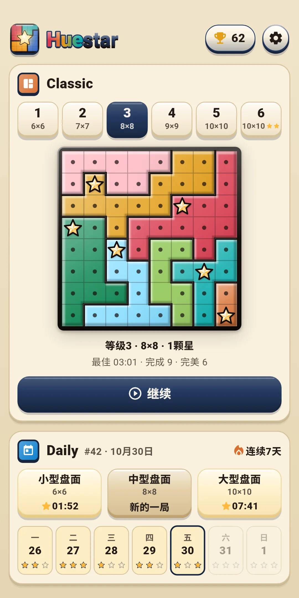
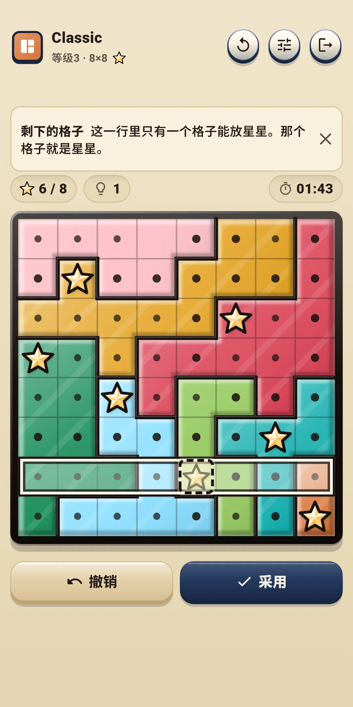
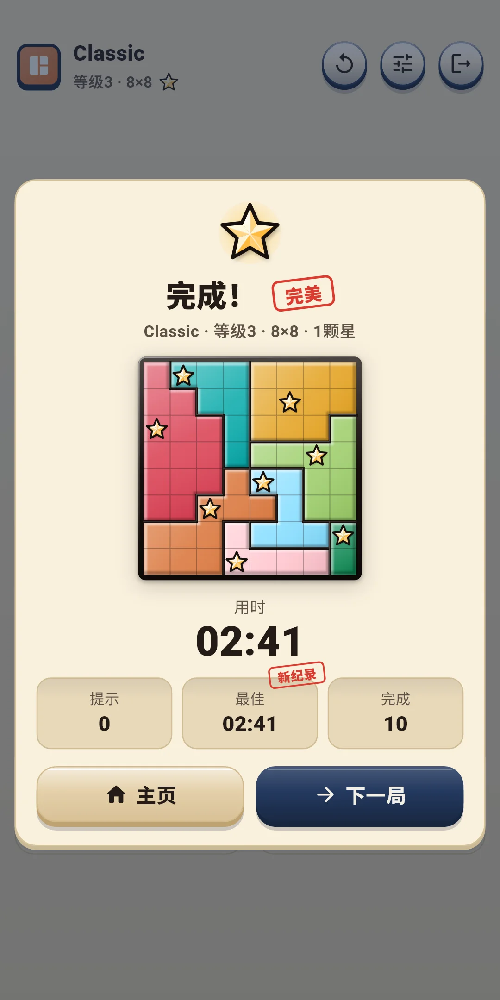
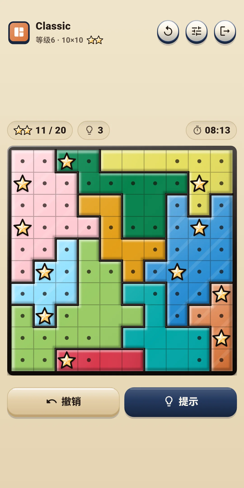
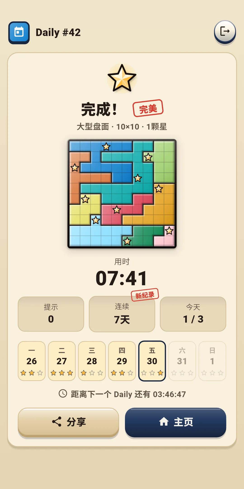
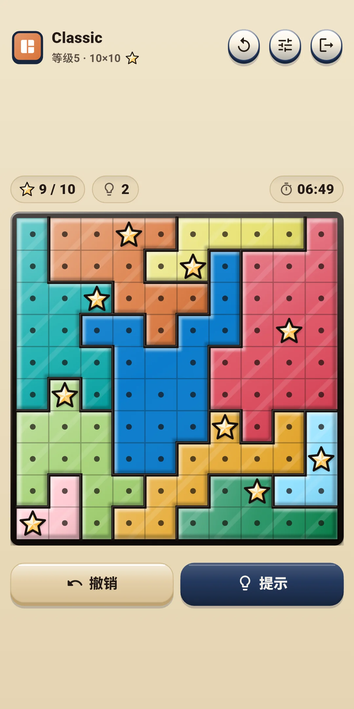
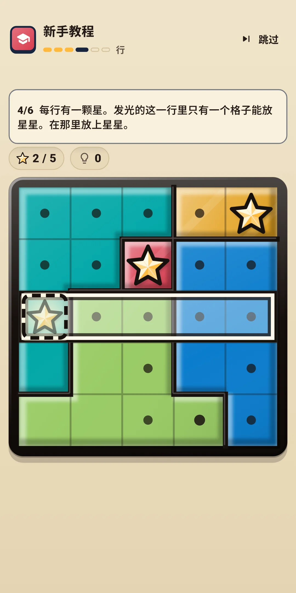

Huestar
玩法说明
玩法说明







| 应用名称 | Huestar |
|---|---|
| 版本 | 1.0.0 |
| 开发 | Willee Project |
| 支持平台 | Android |
Huestar 是一款在被分成颜色区域的盘面上，让每一行、每一列、每个区域都放上星星的逻辑谜题（Star Battle）。每个盘面都只有一个答案，不靠猜测、只靠逻辑就能解到最后。
新手教程用一个5×5的盘面教你基础，分六步：区域 → 不能相邻 → 打圆点 → 行 → 列 → 独立完成。每一步都会让要看的地方亮起，只有该点击的格子才有反应。提示会用名称告诉你用了哪种要点。从最容易的开始，如下。
等级1的盘面用到试放为止就能解开。等级越高，越会出现需要用到扩大后的“受限”想法的盘面。更难的要点，会由提示连同理由一起告诉你（见第4章）。
顶部一行左侧显示模式名称和盘面（例如 Classic，等级3 · 8×8 和星星图案）。星星图案的数量就是每行、每列、每个区域要放的星星数（双星盘面显示 ★★）。Daily 显示 Daily 编号（#12）和盘面种类。右侧的按钮如下。
| 按钮 | 作用 |
|---|---|
| 重来（↻） | 打开选择这一局从头开始或新的一局的面板（见下） |
| 快捷设置 | 打开一个面板，不离开游戏画面就能更改效果、操作方式和辅助设置（见第5、8章）。点击面板上方或往下拉就能关闭 |
| 退出（门的形状） | 回到主页。正在解的盘面会自动保存 |
盘面正上方的一行：
盘面下方的一行：
| 按钮 | 作用 |
|---|---|
| 撤销 | 取消最后一步操作。没有可撤销的内容时会变淡、不能点击 |
| 提示 | 告诉你下一步和理由。每点一次会依次变成 提示 → 查看 → 采用（见第4章） |
| [圆点|星星] | 只在操作方式 B 时显示。决定点击是放星星还是打圆点 |
重来面板：
| 选项 | 内容 |
|---|---|
| 这一局从头开始 | 把盘面恢复到最初的样子。Classic 的用时和提示也从头算，Daily 则继续累计当天的用时和提示。还没有开始操作的盘面会变淡、不能点击 |
| 新的一局（Classic） | 放弃这一局，换一局同等级的盘面。放弃的盘面不算完成。Daily 没有这一项 |
提示按钮会告诉你解题的下一步，并说明理由。提示不限次数，免费使用。
同一个按钮要按三次：提示 → 查看 → 采用。
在设置的盘面与操作和辅助设置中开关。游戏中可以用快捷设置马上更改。
| 等级 | 盘面大小 | 每行、每列、每个区域的星星数 |
|---|---|---|
| 1 | 6×6 | 1颗 |
| 2 | 7×7 | 1颗 |
| 3 | 8×8 | 1颗 |
| 4 | 9×9 | 1颗 |
| 5 | 10×10 | 1颗 |
| 6 | 10×10 | 2颗 |
Huestar Daily #12 · 中 ✅ 03:41 提示 0 🔥 连续5天
#12是 Daily 的编号，旁边是盘面种类和用时（分:秒，超过一小时则为时:分:秒）。第一行的“Huestar Daily”在任何语言中都一样。第二行是提示次数，第三行是连续记录（两天以上才显示）。盘面本身不会放进去，因为会泄露答案。第一个 Daily 开放的那天是 #1，之后每天加一，编号和盘面种类相同就是同样的盘面。
点击主页右上角的奖杯按钮打开。按钮上会显示完成的盘面数。
点击主页右上角的齿轮打开。分为四组。游戏中可以用快捷设置按钮马上更改前三组。
| 项目 | 内容 |
|---|---|
| 音效 | 开关放星星和拿掉星星、打圆点、区域放满、规则冲突、提示、撤销、盘面完成、结果里的玻璃碎片等的声音 |
| 振动 | 放星星时短促，拿掉星星时更轻，区域放满时两下，解开盘面时较长。可以开关 |
| 减少特效 | 一次减少所有特效。开启期间，下面的动画、光效、彩色玻璃碎片都相当于关闭 |
| 动画 · 光效 · 彩色玻璃碎片 | 逐项开关特效。动画是星星弹跳和结果卡片，光效是星星闪烁、区域放满的光和完成的光，彩色玻璃碎片是结果画面上飘落的玻璃碎片。没有整个盘面晃动的特效 |
| 项目 | 内容 |
|---|---|
| 操作方式 | 在 A 点击切换（默认）和 B 点击/长按 中选择（见第3章） |
| 长按时间(毫秒) | 从 250、300、350、400、500 中选择。默认 350。只在操作方式 B 时显示 |
| 项目 | 内容 |
|---|---|
| 自动圆点 | 在星星周围，以及已放满的行、列、区域里自动打圆点。默认开启 |
| 显示规则冲突 | 显示相邻的星星和卡住的行、列、区域。默认开启 |
| 立即显示失误 | 马上标出与答案不同的星星。默认关闭 |
| 显示时间 | 在盘面上方显示时间。默认开启 |
| 区域花纹 | 给每个区域叠上不同的线条花纹。默认关闭 |
| 项目 | 内容 |
|---|---|
| 语言 | 跟随系统（默认），或从列表中直接选择 |
| 隐私选项 | 再次打开广告同意窗口。只在需要同意的地区（例如欧洲）显示 |
| 玩法说明 | 查看规则、操作方式和辅助设置（提示、自动圆点、规则冲突、没有生命值）的简短说明 |
| 重玩教程 | 再玩一次新手教程 |
| 关于 | 版本、本说明（玩法说明）、隐私政策、开源许可 |